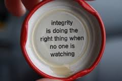

- student: DBC
- mkt mgr + product liaison: TRLA
- timcannady@gmail.com
- twitter.com/tcannadysf
- linked.com/in/timcannady
- github.com/timcannady
Culture
Values and combatting stereotype threat
Some argue the best way to combat 'stereotype threat' is by affirming the values that are important to us. Here's a look at some that are important to me and some ways I can apply them:
- Affection, Adventure, Challenge
- Close Relationships, Community, Courage
- Economic security, Environmentalism, Fairness
- Friendships, Honesty, Inner harmony
- Integrity, Introspection, Knowledge
- Leadership, Meaningful work, Music
- Nature, Personal development, Reputation
- Romance, Security, Self-reliance,
- Spirituality, Wisdom
After reading list, I think it's safe to say one of my values is to have a lot of values...
It's hard to choose which are the most important. On a scale from one-to-five, I'd say I try to live up to most of these values by at least a three. The fives would probably be affection, adventure, close relationships, integrity, personal development and security.
Integrity is a big one. "Character is defined when no one is looking," and, "you make the bed you sleep in" are two quotes I keep in mind. To me, integrity means doing what's right because it's what's right. It's being a stand-up person, especially when faced with either adversity or with the chance to otherwise self-gain.

The last topic someone asked for my advice on is too sensitive for a blog post. However it was a deeply important decision in someone's life, and one that will likely affect them for many years. I was asked what I thought about the situation - what I might do. I told them, but I also stepped back and realized it wasn't so cut-and-dry. Rather, it was one of those decisions that needed to be decided by them. Not pragmatically, but quasi-spiritually. The repercussions from the decision were such that they would have to live with the outcome, not me. Advice was positioned clearly as my own, and I also side-stepped the offer and reminded them that the decision was theirs to make.
When I think of my own values the result is that I feel good inside: a sense of calmness. Less in a proud-way, and more in a way that cuts through any lingering fog that might be causing some cognitive dissonance. Just this simple practice of writing them down could be a great way to mitigate stereotype threat which can be fog in its own right.
To combat the threat I think one of the biggest steps is to first be able to recognize it. It can creep up slowly, so addressing it early on is important. Next, I think simply reminding oneself of their values is a clever start. Cut through the noise, remind yourself of where you're from and where you're going. Stereotypes are rarely founded in values. And while they carry a heavy weight, such threats should inevitably dwindle in the face of deep-rooted personal values.